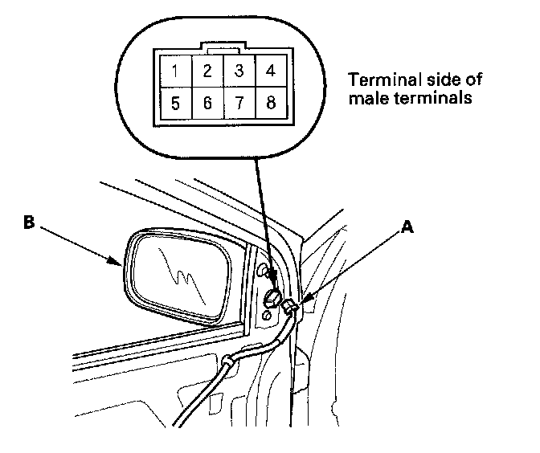
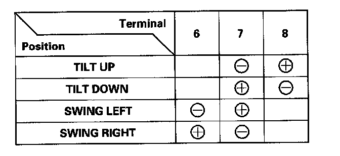

2-Door
Power Mirror Actuator Test2-door
1. Remove the mirror mount cover.

2. Disconnect the 8P connector (A) from the power mirror actuator (B).

3. Check actuator operation by connecting power and ground according to the table.
4. If the mirror fails to work properly, replace the mirror actuator.
Defogger Test
5. Check for continuity between the No.3 and No.4 terminals of the 6P connector. These should be continuity.
6. If the continuity is not as specified, check for:
- An open in the wire.
- A faulty mirror holder.